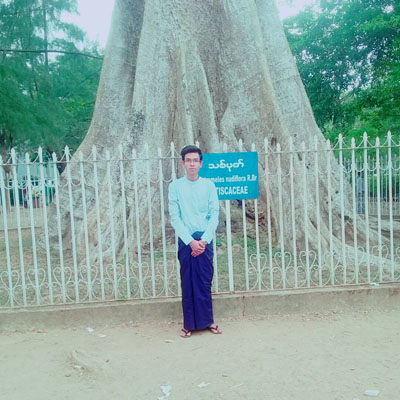

|
UNIVERSITY OF COMPUTER STUDIES, MAUBIN
Second Year (Computer Sciences)
2015-2016 Academic Year
Barclays Premier League (Academic Project)
- Barclays Premier League Project ကုိ ၂၀၁၅-၂၀၁၆ ပညာသင္နွစ္တြင္ ကြန္ပ် ဴ တာ တကၠသိုလ္(မအူပင္) တြင္ တက္ေရာက္ ပညာသင္ၾကားၾကေသာ ဒုတိယနွစ္(ကြန္ပ် ဴ တာ သိပၸံ) မွ ေက်ာင္းသားမ် ားမွ ဖန္တီးေရးသားထားပါသည္။
- ပညာသင္ႏွစ္တြင္ မျဖစ္မေန ေရးဆြဲရေသာ Project ျဖစ္သည့္အတြက္ သက္ဆိုင္ရာ ဘာသာရပ္သင္ ဆရာ၊ ဆရာမ မ် ား၏ လမ္းညႊန္ျပသမႈ ျဖင့္ Group Members မ် ားမွ ၾကိဳးစား ဖန္တီးထားပါသည္။
- Project တြင္ HTML5(Hypertext Markup Language), CSS(Cascading Style Sheet) နွင့္ JavaScript Language မ် ားကို အဓိက အသံုးျပဳ ေရးသားထားပါသည္။
- Static Page ျဖစ္သည့္အတြက္ Real World အသံုးျပဳႏိုင္ေသာ Web Pages မ် ားကဲ့သို႔ အသံုးမျပဳ ႏိုင္ေသာ္လည္း ၾကည့္ရႈ႕သူ မ် ား သုတ၊ ရသ ရရွိေစရန္အတြက္ Football Videos
မ် ား၊ ကစားသမားမ် ား၏ ပံုရိပ္မ် ားကို ထည့္သြင္း ေဖာ္ျပ ထားပါသည္။
- Barclays Premier League တြင္ ယွဥ္ျပိဳင္ ကစားေနၾကေသာ အသင္းမ်ားႏွင့္ ကစားသမား
မ် ားကို လည္း လက္လွမ္းမွီသေလာက္ရွာေဖြ ေဖာ္ျပထားပါသည္။
- ျပည့္စံု ေကာင္းမြန္သည့္ Project(Static Page) ဟု မဆိုႏုိင္ေသာ္လည္း အသံုးျပဳသူ၊ ၾကည့္ရႈ႕သူ မ် ား စိတ္အပန္းေျပနိဳင္ေအာင္Group Members မ် ားမွ ၾကိဳးစား ပံုေဖာ္ထားပါသည္။
- ယခုကဲ႔သို႔ ဖန္တီးေရးဆြဲနိဳင္ေအာင္ သင္ၾကား ျပသ ဆို ဆံုးမေပးၾကေသာ ကြန္ပ် ဴ တာ တကၠသိုလ္(မအူပင္) မွ ဆရာ၊ ဆ၇ာမမ် ားႏွင့္ ျပင္ပမွ သင္ဆရာ၊ ျမင္ဆရာ၊ ၾကားဆရာ
မ် ားကို Group Members မ်ားမွ ရိုေသစြာ ေက်းဇူးတင္ပါသည္။
|
|
သင္ဆရာ၊ ျမင္ဆရာ၊ ၾကားဆရာ မ်ားကို ရိုေသ ေလးစားစြာ ဂါဝရ ျပဳ လွ်က္....
|
သင္ၾကားျပသ ဆို၊ ဆံုးမေပးၾကေသာ ကြန္ပ် ဴ တာ တကၠသိုလ္ မွ ဆရာ၊ ဆရာမ မ် ား ႏွင့္ ျပင္ပေလာကမွ သင္ဆရာ၊ ျမင္ဆရာ၊ ၾကားဆရာ မ်ားကို ရိုေသေလးစားလွ်က္.....
|